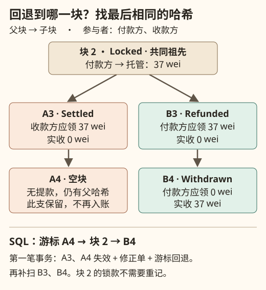

收款人现在可领 0；付款人已从托管领走 37 wei。 同一页码放不下两页不同的账，今天从链头沿父块指纹往回找到的是退款那一页，不是旧结算页。这种已采用的区块被另一支替换的现象叫重组。留下旧回执说明昨晚为何那样答，但不让它参与今天的合计。37 是合约付出的金额，不能断言付款人的钱包净增了 37：他还可能付过交易费。
只改一件事：新支仍已退款，但付款人没有调用提款。如果翻遍这段新账只看到退款，没有提款，现在谁收到钱？付款人应领 37、实收 0，收款人仍应领 0。退款在这份合约里是改应领人，不是把钱送到钱包。
只想读懂客服怎么答，可以转到第 20 课：怎样用当前账本核对订单。以下选做本地换支实验：用第 12 课的块哈希认回执，按第 14 课的托管规则读金额，再把第 16 课的部署清单和第 18 课保存的扫描位置对起来。Recover.java修的是 PostgreSQL 对单笔托管的解释，不是节点的历史。
一张共同的锁款凭条，两种互斥的后续
付款方在块 2 锁入 37 wei，合约收钱，此时双方的 credit 都是零。给这一刻留一份本地开发链快照。走 A 支：截止前由付款方调用 settle()，合约把 37 写入收款方的 credit；再挖一个没有交易的块。收款方还没调用 withdraw()，所以没收到转账。让索引器扫完并退出，数据库游标停在 A4。
只把 Anvil 还原到块 2，不还原数据库。 让下一块的时间戳等于合约的 deadline，付款方调用 refund()。第 14 课的条件是 timestamp < deadline 才能结算，timestamp >= deadline 即可退款，故 B3 把 37 写入付款方的 credit。如果付款方再调用 withdraw()，B4 中合约清零这笔应领、向调用者转 37，转账成功才发出 Withdrawn。这里的「实收」专指该托管向受益人转出的毛额，不含交易费，不是 EOA 原生币余额的净增幅。


这是开发节点的快照演练，不是模拟公网节点如何投票选链。我们只复现索引器必须处理的可观察结果：按高度读出的规范块变了，旧的 SQL 事实还在。没有模拟真实网络传播、最终性违规或链下打款。
重启时，为什么不能只查游标的下一块？
把区块高度当 Kafka offset，会写出这样的恢复逻辑：next = storedHeight + 1。本例旧头、新头都是 4，next=5，程序甚至不发取块请求就报告「已追平」。但第 4 块的哈希变了，旧收款方会一直被显示为有款可提。多等几个块只能改变接受风险的策略，不替代哈希核对；只盯着通知中的 removed 标记也救不了断线期间漏掉的变化。
第 18 课的扫描器 在续扫前核对游标哈希，扫新区间时要求新块的 parentHash 等于上一块的 hash。不相等，宁停不跳。本课为这个停点加一条恢复路径：
- 锁游标，认部署。
SELECT … FROM scan_cursor WHERE id=1 FOR UPDATE放在关闭自动提交之后。把受信清单中的链号、合约地址、部署高度和完整块哈希同游标比对；再按高度从节点核对部署哈希，核对库中规范部署块。只凭 31337 或同一个地址不能恢复。如果当前节点根本不是那次部署，停止，不把旧账改成「零」。空库没有行可锁，交给Scan建立经核对的起点；实验只有一个索引写进程，不用空行锁充当多主选举。 - 沿两个父链向后对齐。 起点高度取
min(旧游标高度, 节点头高度)。旧侧从游标哈希反查本地规范头，向下每一步要求旧孩子.parentHash == 当前库中父块.hash；新侧按高度逐块取规范头，也要求父子哈希连得上。A4 对 B4：不等；A3 对 B3：不等；两边的块 2 哈希相等。哈希承诺了父块，故这是两条已核对路径上最高的共同祖先，而不是猜测「通常回两块就够」。没有日志的 A4 仍是路径的一环，所以不能只存有事件的高度。 - 辨别短头和错支。 若 B 只到 3，节点没有第 4 块本身并不能证明 A4 失效；B3 与 A3 哈希不同才是冲突证据。若较短节点只有与旧链一致的前缀，程序拒绝倒带：先等节点追平或核查节点同步。若祖先走查遇到 RPC 错误、父哈希断裂、部署锚断裂，同样停下。数据库行锁不能冻结以太坊节点，所以写库前还要按高度复读本轮新侧比较起点的哈希；此后链若再变，下次扫描仍须重新核对。
本例按分歧深度线性访问块头，不从创世重扫。行锁会一直持有到事务结束；这适用于本机单写、短分叉教学，不是高延迟多节点索引器的吞吐设计。生产中应有重组深度与耗时告警、超界暂停并人工核验，而不是遇到不认识的部署就自动重置数据库。
一次提交管哪三项？
看 Recover.repair 中相邻的三条 SQL。先把 chain_block 中祖先之后、原先 canonical=true 的块置为 false；受影响行数必须等于 旧高度−祖先高度。再写 reorg_audit，记录本次链与合约、旧游标、节点观察到的比较点、共同祖先（均含高度与哈希）、失效块数及时间。最后让同一行 scan_cursor 回到祖先。这三项在同一个 JDBC 事务中提交；任一失败，都回滚。 修正单是索引器观察到换支的证据，不是一笔链上退款；真正的 Refunded 只能来自规范链上的合约日志。
旧块的 escrow_log 一行不删，保留 (chain_id, block_hash, tx_hash, log_index) 原位置。canonical_log 是与规范块的连接视图，不是第二份需要手工冲销的余额表。查询在修正提交之前仍看到 A4；提交之后、补扫之前，看到的是只确认到块 2 的投影，不能向客服宣传「已到最新」。Recover 释放锁后才调用 Scan，由后者按页把 B 支的区块、日志和前移的游标同批提交。两阶段故意留有可重启的存档点。
| 中断位置 | 下一进程应该看见什么 | 不该发生什么 |
|---|---|---|
| 三项修正均已执行，但 SQL 尚未提交 | 重新读仍是 A4，两条 A 支规范事件，修正单 0 张 | 部分 A 块失效，游标却留在 A4 |
| 修正已提交，B3 尚未补扫 | 游标在块 2，只有 Locked 计入，修正单 1 张 |
用 B 的最新高度给这份旧投影盖「已追平」章 |
| B 支已经补齐，重复投喂 3 至头 | B 支事实、金额、修正单均不变 | 为同一退款发两条入账或再造一张修正单 |
如果根据 A 支的未最终结果已经发了邮件，收件箱不会随 SQL 事务回滚；更不能声称把真实链下打款撤回了。保留当时的证据，按业务确认策略处理纠正通知或人工核对。后续看第 20 课：订单对账与运维。
只在本机做一次真实换支
从仓库根目录运行。需要 Python 3.11、JDK 21、Maven 3.9、web3j 4.12.3（Maven 工程）、Docker/PostgreSQL 17.5、lsof 及第 13 课的 Foundry 1.7.1 / solc 0.8.28。依赖与镜像提前准备好即可离线做实验。端口 127.0.0.1:18556 必须空闲；先退出你自己前一课的 --hold，不要复用或终止别人的节点。
export PATH="${XDG_CACHE_HOME:-$HOME/.cache}/chain-course/m04/bin:$PATH"
export FOUNDRY_SOLC="${XDG_CACHE_HOME:-$HOME/.cache}/chain-course/m04/bin/solc"
unset ANVIL
bash labs/m05/build.sh
# 仅当本卷专用临时 PostgreSQL 尚未启动时执行（已经在运行就跳过这一行）
bash labs/m05/db.sh start
WORK=$(mktemp -d)
python3 labs/m05/reorg_lab.py --out "$WORK/paid"
实验驱动 自己启动第 16 课的 deployment.py --out … --hold，只在该子进程成功交接之后发送上述三类业务调用及快照命令。两个账户是本轮的临时开发账户，不输入密钥。它新建一个随机命名的 m05_fork… 空库，运行共享建表 SQL，为每个子进程明确设置 M05_DB、M05_MANIFEST；不清表、不覆盖你正在学的订单库。--out 必须是尚不存在的目录。留下的数据库名在 database.txt，进程退出时只关闭自己的 Anvil。
驱动在不同 JVM 中执行 Recover（空库认锚后扫 A）→ 换支 → Recover --interrupt-before-commit（写完三项后故意抛错）→ Recover --rewind-only（提交修正就退出）→ Recover（从祖先续扫 B）→ Scan 3、Recover（实际重放已有区间，再重启）。正常服务用的命令是 bash labs/m05/run.sh Recover；另外两个开关只用于演练。故意中断必须在 interrupt.log 中留下 LAB_INTERRUPT_BEFORE_COMMIT 并以非零码退出，端口或依赖错误不能冒充回滚成功。
下面是默认输入的预期对照，不是固定回执。live 是参与核算的事件数；raw 是所有分支的原始事件数。每个角色后的两个数依次是「尚可领 / 从这份合约累计实收」，单位都是 wei。
A height=4 live=2 raw=2 payee=37/0 payer=0/0 audit=0
rolled-back height=4 live=2 raw=2 payee=37/0 payer=0/0 audit=0
REWIND old=4 ancestor=2 observed=4 orphanBlocks=2
ancestor height=2 live=1 raw=2 payee=0/0 payer=0/0 audit=1
B height=4 live=3 raw=4 payee=0/0 payer=0/37 audit=1
replayed height=4 live=3 raw=4 payee=0/0 payer=0/37 audit=1
不要只看退出码。用这些命令取回本轮完整哈希和修正单，数据库读取使用单条 SQL 的一致性快照：
cat "$WORK/paid/interrupt.log"
export M05_DB="$(cat "$WORK/paid/database.txt")"
bash labs/m05/db.sh sql < labs/m05/reorg-evidence.sql
python3 - "$WORK/paid" <<'PY'
import json, pathlib, sys
p = pathlib.Path(sys.argv[1]); get = lambda f: json.loads((p/f).read_text())
a, b, r = map(get, ('A.json', 'B.json', 'receipts.json')); j, = b['audit']
assert (j['old_hash'], j['ancestor_hash'], j['observed_hash']) == (a['hash'], r['lock']['blockHash'], b['hash'])
print(' A3', r['A-settle']['blockHash'], '\n B3', r['B-refund']['blockHash'])
print('修正单', j, '\n当前按角色的账', b['balances'])
assert a == get('rolled-back.json') and b == get('replayed.json')
PY
核账查询里的关键不是 sum(amount_wei)，而是只对本链、本合约的 canonical_log，按受益地址和事件含义求和：
sum(CASE WHEN l.kind IN ('Settled','Refunded') THEN l.amount_wei
WHEN l.kind='Withdrawn' THEN -l.amount_wei ELSE 0 END) AS credit_wei,
sum(CASE WHEN l.kind='Withdrawn' THEN l.amount_wei ELSE 0 END) AS received_wei
拿 B 支三条日志走一遍：Locked(37) 只说谁出资，未产生应领；Refunded(37) 给付款人的应领加 37；同一受益人的 Withdrawn(37) 再从应领扣 37，给实收加 37。因此 B 行的 payer=0/37 不是「没有退款」。若把 A 支那条 Settled(37) 也送进求和，就会凭空多出收款人的 37。原始表用来列全地址，金额只取规范事件；左连接才让原收款人的两列明确显示为 0，而不是整个人从报表消失。
SQL 用精确整数 numeric 求和，跨 JSON 边界把金额转为十进制字符串。驱动还对 A、B 各自的块哈希用 eth_call 校验合约 credit(address)，防止 SQL 算对了事件条数却算错受益人。
独立作业：让新支比旧支短一块，再判一次实收
同事说「退款已经成功，付款方钱包就一定收到了」。另开同一套实验，改为 9,007,199,254,740,993 wei，B 支在 refund() 后停下，不提现。先不看输出，写下你认定的共同祖先、退款后的两个金额以及应该留下几张修正单，再执行：
python3 labs/m05/reorg_lab.py --wei 9007199254740993 --leave-credit --out "$WORK/unclaimed"
cat "$WORK/unclaimed/ancestor.json" "$WORK/unclaimed/B.json"
交回判据： A 游标是 4，新头只有 3；提供 A3 与 B3 两个不同的完整哈希和相同的块 2 父哈希（查两行 blocks.parent_hash），而不是用「少了一块」代替证据。修正单应写 old_height=4, observed_height=3, ancestor_height=2, orphan_blocks=2；B 的规范事件只有 Locked、Refunded，原始表另留旧 Settled，没有 Withdrawn。故付款方仍应领 9007199254740993、实收 0，收款方两项皆 0；二次重放后修正单仍只有一张。若末位变成 2，检查金额有没有走 double；若实收非零，检查把哪种事件误当成了出款。B.json、replayed.json、receipts.json 和本轮部署清单是可交接证据。
实验结束后由专用库的使用者决定何时归档、停止。bash labs/m05/db.sh stop 会清除整个临时集群，不是只清本课的随机库；其他课仍在用时不要调用。保存了 JSON 可以离线复算，不表示能重启原来的内存链。
查证原文
- Anvil 1.7.1 的 RPC 定义与参数用例：
evm_snapshot、evm_revert、evm_setNextBlockTimestamp是开发节点控制历史和时间的接口，不是公网共识操作。 - EIP-1898：按块哈希读取状态：支撑
eth_call的blockHash、requireCanonical选择；不赋予 SQL 或未来区块最终性。 - PostgreSQL 17：事务的原子可见性与行级锁：
FOR UPDATE约束同一数据库行的写者，不是分布式节点锁。